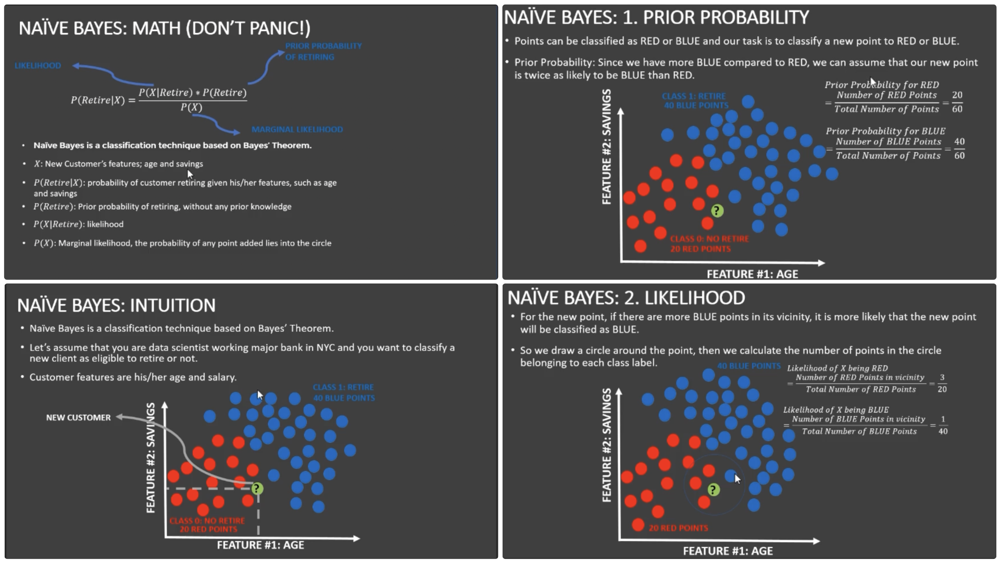
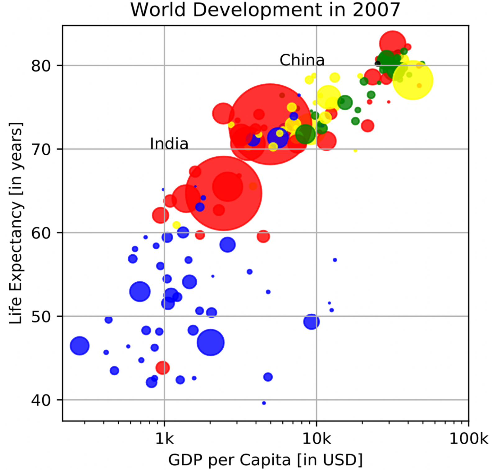
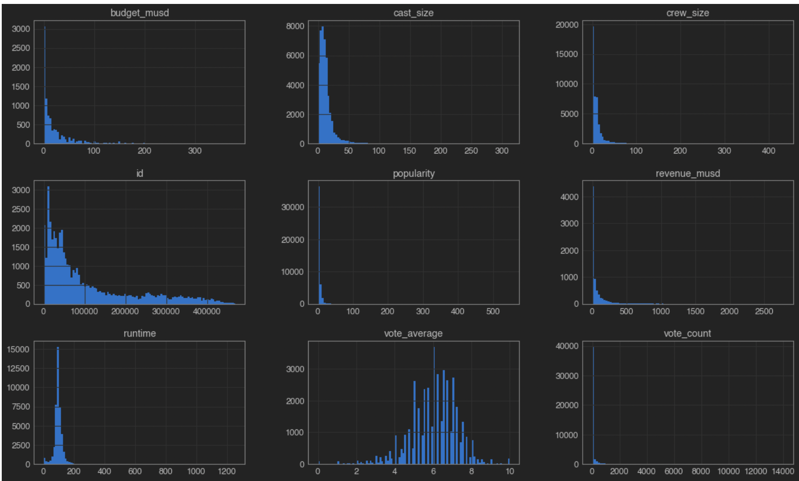

Statistics & Analytics

In this project I completed the following objectives: Install and import python libraries and visualize datasets. Perform exploratory data analysis using matplotlib and plot word-cloud using the WorldCloud library. Perform text data cleaning such as removing punctuation and stop words by calling the punctuation function using the string library.
Understand the concept of count vectorization (tokenization). Perform tokenization to tweet text using Scikit Learn. Understand the theory and intuition behind Naïve Bayes classifiers. Understand the difference between prior probability, posterior probability and likelihood. Train Naïve Bayes classifier models using Scikit-Learn to preform classification. Evaluate the performance of trained Naïve Bayes Classifier model using confusion matrices. See Github to browse code.
Use the matplotlib library from Python to develop a scatterplot visual, with customizations, of the Gapminder World Map, which shows the correlation between life expectancy and GDP Per Capita of multiple countries. See Github to browse code
Perform data analysis on a dataset of movies and their respective details using python in Jupyter Notebook. See Github to browse code
